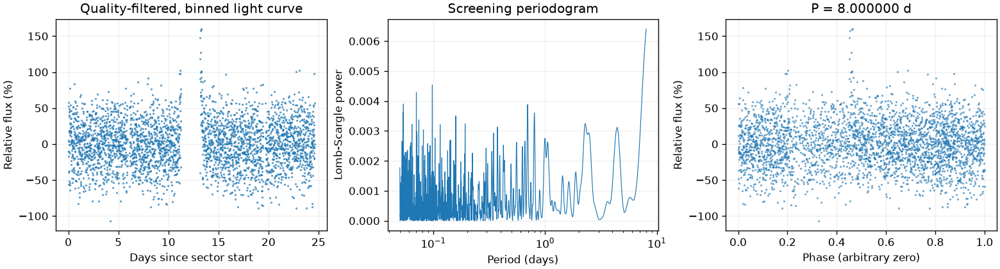
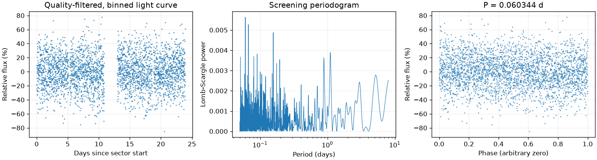

Sector 93 · 8.000000 天
相对幅度估计 17.6881% · 有效点数 15950

Screening peak only; no correlated-noise false-alarm calibration or physical classification.
这是筛选报告，未确认新发现，也不能代替 VSX 提交材料。
图中依次为亮度随时间变化、候选周期强度和折叠后的重复形状。相位零点仅供展示；纵轴是相对通量，不是标定星等。
相对幅度估计 17.6881% · 有效点数 15950

Screening peak only; no correlated-noise false-alarm calibration or physical classification.
相对幅度估计 11.6967% · 有效点数 15130

Screening peak only; no correlated-noise false-alarm calibration or physical classification.
{
"ra_deg": 287.604285053184,
"dec_deg": -59.9116029298992,
"catalog_queries": [
{
"source": "VSX",
"checked_at": "2026-11-10T08:48:04.620283+00:00",
"url": "https://vsx.aavso.org/index.php",
"query": {
"params": {
"view": "api.list",
"ra": 287.604285053184,
"dec": -59.9116029298992,
"radius": 0.04,
"format": "json"
}
},
"status": "completed",
"match_count": 7,
"note": "VSX neighborhood only; no-match is not novelty confirmation."
},
{
"source": "SIMBAD/VizieR/ADS",
"status": "not_run",
"note": "Requires detailed catalog/literature review; VSX alone is insufficient."
}
],
"vsx_neighbors": [
{
"Name": "Gaia DR3 6632376699931735936",
"RA2000": "287.53917",
"Declination2000": "-59.93459",
"ProperMotionRA": "-3.0030",
"ProperMotionDec": "-4.1340",
"VariabilityType": "RS",
"MaxMag": "12.67 G",
"MinMag": "12.73 G",
"SpectralType": "K",
"Discoverer": "Gaia collaboration",
"Category": "Variable",
"OID": "7342624",
"Constellation": "Pav",
"sep_arcsec": 143.69953841158772
},
{
"Name": "Gaia DR3 6632388833222595456",
"RA2000": "287.56441",
"Declination2000": "-59.90306",
"ProperMotionRA": "-0.0610",
"ProperMotionDec": "-8.3190",
"VariabilityType": "E",
"Period": "0.438603",
"MaxMag": "18.33 G",
"MinMag": "18.72 G",
"Discoverer": "Gaia collaboration",
"Category": "Variable",
"OID": "7343221",
"Constellation": "Pav",
"sep_arcsec": 78.27130152054086
},
{
"Name": "Gaia DR3 6632377013472568448",
"RA2000": "287.57063",
"Declination2000": "-59.92636",
"ProperMotionRA": "-3.1270",
"ProperMotionDec": "-4.4350",
"VariabilityType": "E",
"Period": "11.3842",
"MaxMag": "17.74 G",
"MinMag": "17.96 G",
"Discoverer": "Gaia collaboration",
"Category": "Variable",
"OID": "7343385",
"Constellation": "Pav",
"sep_arcsec": 80.68538343745755
},
{
"Name": "Gaia DR3 6632377116551768832",
"RA2000": "287.60965",
"Declination2000": "-59.89522",
"ProperMotionRA": "-3.6700",
"ProperMotionDec": "-3.9330",
"VariabilityType": "VAR",
"Period": "0.0343464",
"MaxMag": "14.16 G",
"MinMag": "14.21 G",
"SpectralType": "A",
"Discoverer": "Gaia collaboration",
"Category": "Variable",
"OID": "7344263",
"Constellation": "Pav",
"sep_arcsec": 59.76846989635011
},
{
"Name": "V0559 Pav",
"RA2000": "287.62363",
"Declination2000": "-59.94003",
"VariabilityType": "BY:",
"Period": "1.872::",
"MaxMag": "18.43 V",
"MinMag": "18.57 V",
"Category": "Variable",
"OID": "10871826",
"Constellation": "Pav",
"sep_arcsec": 108.1244261836525
},
{
"Name": "Gaia DR3 6632376876033904000",
"AUID": "000-BQH-935",
"RA2000": "287.63760",
"Declination2000": "-59.92907",
"VariabilityType": "S",
"MaxMag": "15.51 G",
"MinMag": "15.88 G",
"SpectralType": "G",
"Discoverer": "Gaia collaboration",
"Category": "Variable",
"OID": "8613017",
"Constellation": "Pav",
"sep_arcsec": 86.9910357607671
},
{
"Name": "Gaia DR3 6632376944747372928",
"RA2000": "287.64629",
"Declination2000": "-59.91909",
"ProperMotionRA": "-2.8750",
"ProperMotionDec": "-3.6230",
"VariabilityType": "VAR",
"Period": "0.0584066",
"MaxMag": "14.26 G",
"MinMag": "14.31 G",
"SpectralType": "B",
"Discoverer": "Gaia collaboration",
"Category": "Variable",
"OID": "7345169",
"Constellation": "Pav",
"sep_arcsec": 80.45171599985855
}
],
"notes": [],
"errors": [],
"repeatability": {
"status": "inconsistent",
"fractional_spread": 0.9924569738334142,
"tolerance": 0.05,
"note": "Heuristic screening comparison, not period-error or long-term phase-coherence validation."
},
"localization": null,
"submission": {
"name": null,
"ra_deg": null,
"dec_deg": null,
"coordinate_source": null,
"coordinate_epoch": null,
"variability_type": null,
"period_days": null,
"period_error_days": null,
"epoch": null,
"epoch_time_standard": null,
"epoch_event": null,
"max_magnitude": null,
"min_magnitude": null,
"passband": null,
"magnitude_source": null,
"mean_magnitude": null,
"amplitude_magnitude": null,
"amplitude_passband": null,
"discoverers": null,
"references": null
}
}